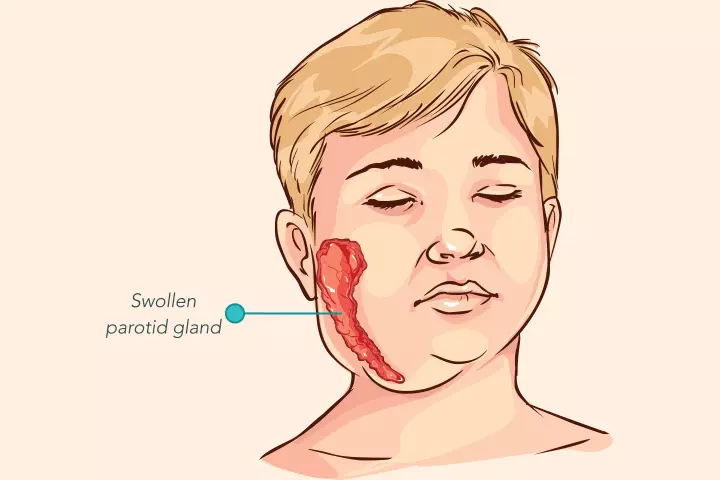

Expanded Nursing Uganda Explanation
Mumps (Parotitis) should be studied as a medication-safety topic: indication, dose, route, timing, contraindications, expected effects, adverse effects, documentation and patient teaching all matter.
01 MUMPS
Mumps , also known as epidemic parotitis , is an acute , contagious viral infection primarily affecting the salivary glands, most notably the parotid glands .
Mumps is an acute , systemic , communicable viral infection . Its most characteristic feature is the painful swelling of one or both parotid glands .
02 Aetiology :
Mumps is caused by the mumps virus ( genus Rubulavirus , family Paramyxoviridae ). This enveloped, single-stranded RNA virus is transmitted through respiratory droplets produced during coughing, sneezing, or talking by an infected individual. The virus replicates in the respiratory tract before spreading to other sites in the body, including salivary glands.
03 Forms and Routes of Transmission:
The primary mode of transmission is through direct contact with respiratory droplets from an infected person. This can occur through:
- Droplet spread : Inhalation of aerosolized droplets expelled from an infected person.
- Direct contact : Touching surfaces contaminated with respiratory secretions, and then touching the mouth, nose, or eyes. (This is less common than droplet spread).
Incubation Period:
The incubation period for mumps is usually 16–18 days (range 12–25 days), representing the time between infection and the onset of symptoms.
04 Clinical Features :
- Prodromal Stage: Mild fever, malaise, and anorexia may precede other symptoms.
- Parotitis : Painful swelling of one or both parotid glands usually develops within 24 hours (though it can be delayed up to a week). Other salivary glands may also be affected. Swelling is accompanied by tenderness in the area between the earlobes and the mandibular angle. Patients often report earache, difficulty eating, and difficulty speaking. Glandular swelling increases for a few days and then gradually subsides, usually disappearing within a week.
- Orchitis : Most common in post-pubertal males, presenting as painful and tender enlargement of one or both testes. This can lead to testicular atrophy and potentially sterility.
- Oophoritis : In females, it causes lower abdominal pain (LAP).
- Mumps Pancreatitis : Causes abdominal pain, which can be difficult to diagnose.
- Mumps Encephalitis: Presents with high fever and marked changes in the level of consciousness.
- Parotitis: Painful swelling of one or both parotid glands (located below and in front of the ears). This is the hallmark feature of mumps. The swelling typically begins unilaterally but often becomes bilateral.
- Fever : Often high-grade (39-40°C or higher).
- Headache : A common and often severe symptom.
- Myalgia (muscle aches): Generalized muscle pain and stiffness.
- Malaise (general feeling of illness): Fatigue, weakness, and lack of energy.
- Anorexia (loss of appetite): Reduced or absent desire to eat.
- Nausea and vomiting : Occasional symptoms, particularly in children.
- Facial pain : This can be intense and localized to the affected salivary gland(s).
- Swelling of other salivary glands : Although less common, submandibular and sublingual glands can also be involved.
- Painful swallowing : Due to inflammation of the salivary glands and surrounding tissues.
- Dry mouth (xerostomia) : From reduced salivary gland function.
05 Definitive Diagnosis and Investigations:
Diagnosis is primarily clinical, based on the characteristic swelling of the parotid glands and other symptoms. However, laboratory confirmation may be helpful, especially in atypical cases or suspected outbreaks. Tests include:
- Serological tests : Detecting specific IgM and IgG antibodies against the mumps virus. IgM indicates acute infection, while IgG suggests past infection or immunity.
- Viral culture : Less commonly used due to its lower sensitivity and longer turnaround time than serology.
- PCR (polymerase chain reaction) : Can detect the viral RNA in saliva or other specimens. This is a highly sensitive and specific method for
06 Management:
Aims :
- Relieve symptoms.
- Prevent complications.
- Prevent spread of infection.
Medical Management:
There’s no specific antiviral treatment for mumps . Management focuses on supportive care:
- Complete bed rest: Encourage rest to facilitate recovery.
- Fever control : Antipyretics (e.g., acetaminophen) as needed.
- Communication and feeding: Devise strategies to ensure effective communication and comfortable feeding, especially for those with difficulty swallowing.
- Steroids (if prescribed): Corticosteroids (e.g., hydrocortisone 100-200 mg initially, followed by prednisolone 10-15 mg twice daily for 5-7 days) may be used to reduce inflammation in severe cases, but this is at the doctor’s prescription..
- Anti-inflammatory medications : (In severe cases, corticosteroids are sometimes considered, but mainly if there’s severe complications)
- Supportive care: Focuses on adequate rest, hydration, and pain management.
- Hydration : Ensure adequate fluid intake to prevent dehydration. Offer fluids the patient can tolerate.
- Pain relief : Acetaminophen (paracetamol) can be used to manage fever and pain and cold compresses. Avoid NSAIDs (like ibuprofen or aspirin) as these may increase the risk of bleeding.
- Soft diet : Provide soft foods that are easy to swallow and minimize discomfort.
- Oral hygiene : Encourage frequent rinsing of the mouth with warm salt water to soothe inflammation.
- Vaccination : A live attenuated mumps vaccine ( part of the MMR vaccine) is highly effective in preventing mumps. It’s usually given subcutaneously in two doses, starting at 9 months or first contact, and at 18 months of age in Uganda.
- Hygiene : Avoid sharing eating and drinking utensils with infected individuals.
- Meningitis (inflammation of the meninges): The virus can spread to the brain, causing meningitis, with symptoms such as severe headache, stiff neck, fever, and altered mental status.
- Encephalitis (inflammation of the brain): A rare but serious complication characterized by inflammation of the brain tissue.Symptoms can include seizures, coma, and lasting neurological deficits.
- Orchitis (inflammation of the testicles): Common in post-pubertal males, causing testicular pain, swelling, and tenderness. While it can cause temporary discomfort and potentially impact fertility in severe cases, it usually resolves without long-term effects.
- Oophoritis (inflammation of the ovaries): Rare complication in females, causing similar symptoms to orchitis, though usually less severe.
- Deafness : Rare complication of mumps.
- Pancreatitis (inflammation of the pancreas): Can lead to severe abdominal pain, nausea, and vomiting.
- Myocarditis (inflammation of the heart muscle): Rare but potentially life-threatening complication.
- Nephritis (inflammation of the kidneys): Rare and typically mild.
07 Nursing Uganda Clinical Lens
Use Mumps (Parotitis) as a practical nursing topic, not only a memorized definition. Study medicines through indication, safety checks, expected response, adverse effects and patient teaching.
- What to understand first: define mumps (parotitis), identify the normal or expected pattern, then explain what changes when the patient is unwell.
- Why it matters in care: the nurse must recognize risk early, explain findings clearly, document accurately and know when to escalate.
- How to revise it: connect each point to assessment, nursing diagnosis or care problem, intervention, rationale and evaluation.
08 Assessment Guide
- Diagnosis or reason for the medicine, allergies, pregnancy status and previous reactions.
- Current medicines, herbal products, renal or liver risk and baseline observations.
- Dose, route, timing, dilution, expiry date and documentation requirements.
09 Nursing Priorities, Rationales and Outcomes
- Apply the rights of medication administration and facility policy.
- Monitor therapeutic response and class-specific adverse effects.
- Educate the patient on purpose, timing, missed doses, warning symptoms and adherence.
The rationale for these priorities is patient safety: nursing actions should prevent deterioration, reduce discomfort, support recovery and create clear evidence for the next caregiver.
- Expected outcome: The medicine produces the intended effect without preventable harm, and administration is accurately documented.
10 Patient Teaching and Revision Check
- Explain mumps (parotitis) in simple language the patient or caregiver can repeat back.
- Teach warning signs, medicine or follow-up instructions, hygiene or lifestyle points where relevant.
- For exams, prepare a short answer using: definition, causes or risk factors, signs, assessment, management, complications and prevention.
- For ward practice, document baseline findings, actions taken, patient response and the plan for review.
Illustrations and Diagrams (1)

Related Video Lectures
Watch nursing lecture videos on YouTube for this topic. Opens in a new tab.
Watch on YouTubeExternal link: YouTube may use its own cookies and terms. Nursing Uganda is not affiliated with YouTube.